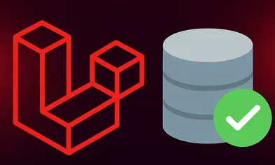
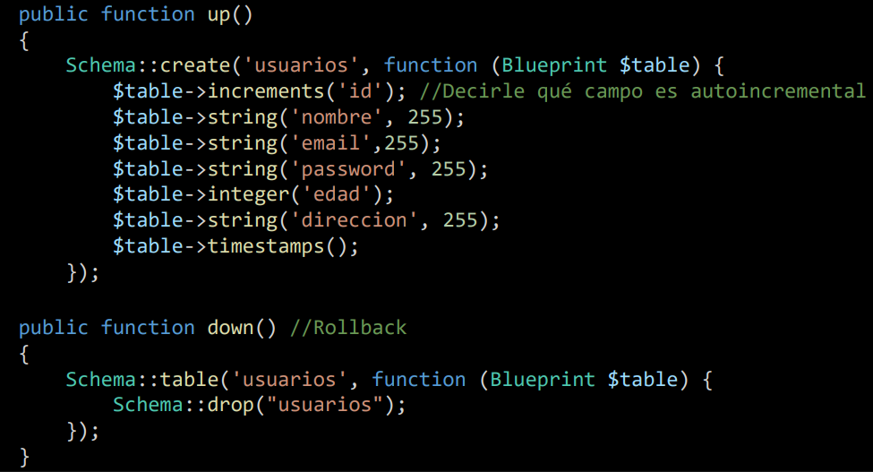
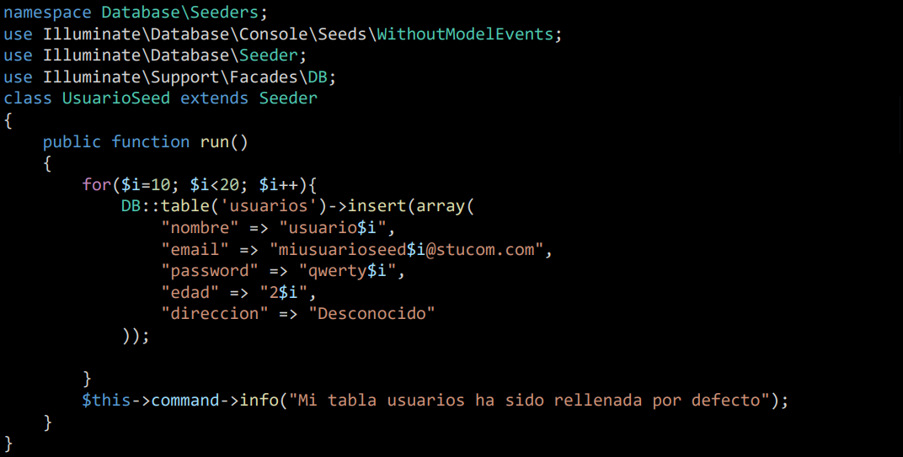
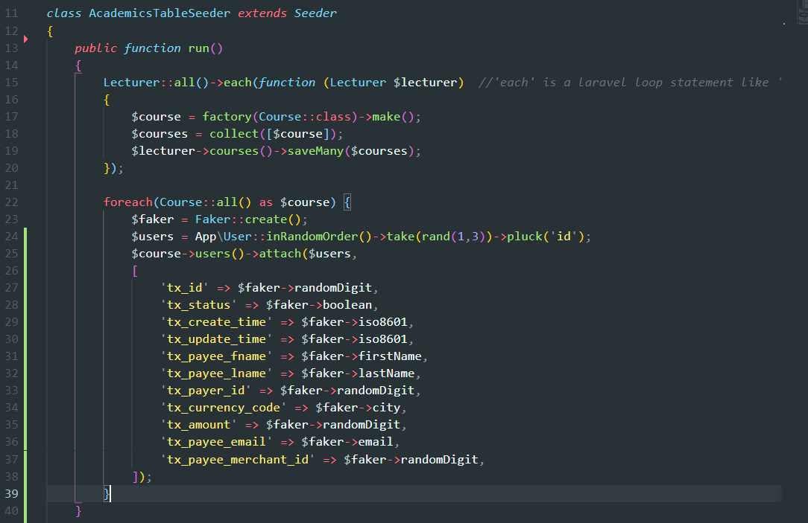
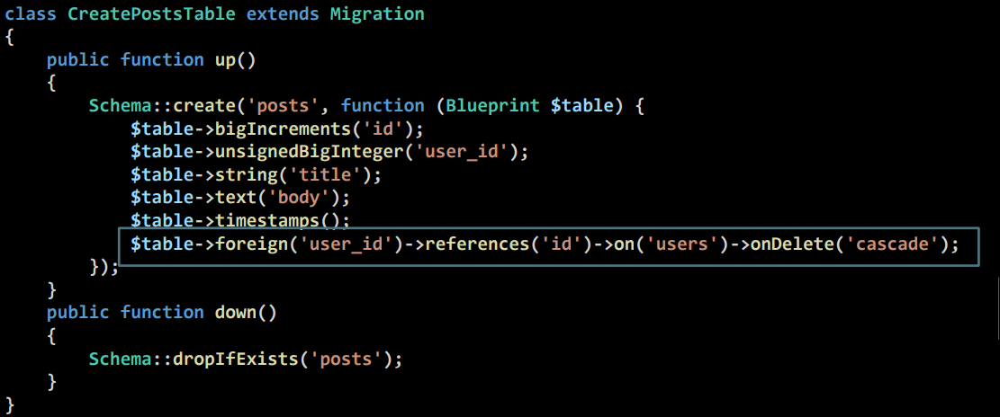

1. Introducción
Laravel ofrece herramientas para gestionar la base de datos de forma estructurada: migraciones para el esquema, seeders para los datos y Faker para generar información de prueba.

1.1. Configuración de la conexión (.env)
Antes de trabajar con migraciones y seeders, es necesario configurar la conexión a la base de datos
en el archivo .env ubicado en la raíz del proyecto Laravel.
Variables de conexión MySQL
DB_CONNECTION=mysql
DB_HOST=127.0.0.1
DB_PORT=3306
DB_DATABASE=nombre_base_datos
DB_USERNAME=root
DB_PASSWORD=tu_contraseña
⚠️ Importante
- Asegúrate de que la base de datos existe antes de ejecutar las migraciones
- El archivo
.envno debe subirse a control de versiones (debe estar en.gitignore)
2. Migrations
2.1. Crear una migración
php artisan make:migration create_hoteles_table
2.2. Definir la estructura
use Illuminate\Database\Migrations\Migration;
use Illuminate\Database\Schema\Blueprint;
use Illuminate\Support\Facades\Schema;
return new class extends Migration {
public function up(): void {
Schema::create('hoteles', function (Blueprint $table) {
$table->id();
$table->string('nombre');
$table->string('direccion')->nullable();
$table->timestamps();
});
}
public function down(): void {
Schema::dropIfExists('hoteles');
}
};
2.3. Ejecutar migraciones
php artisan migrate
2.4. Ejemplo migracion

3. Seeders
3.1. Crear un seeder
php artisan make:seeder HotelSeeder
3.2. Seeder básico
use Illuminate\Database\Seeder;
use Illuminate\Support\Facades\DB;
class HotelSeeder extends Seeder {
public function run(): void {
DB::table('hoteles')->insert([
'nombre' => 'Gran Hotel',
'direccion' => 'Calle Mayor 3',
'created_at' => now(),
'updated_at' => now(),
]);
}
}
3.3. Ejecutar seeder
php artisan db:seed --class=HotelSeeder
3.4. Ejemplo seeder

4. Uso de Faker
Faker permite generar datos realistas directamente dentro de un seeder.
4.1. Usar Faker en un Seeder
use Illuminate\Database\Seeder;
use Illuminate\Support\Facades\DB;
use Faker\Factory as Faker;
class HotelSeeder extends Seeder {
public function run(): void {
$faker = Faker::create('es_ES');
for ($i = 0; $i < 10; $i++) {
DB::table('hoteles')->insert([
'nombre' => $faker->company(),
'direccion' => $faker->address(),
'created_at' => now(),
'updated_at' => now(),
]);
}
}
}
4.2. Ejecutar el seeder con Faker
php artisan db:seed --class=HotelSeeder
4.3. Ejemplo seeder con Faker

5. Relaciones entre tablas
5.1. Crear migración para relación 1:N
php artisan make:migration create_habitaciones_table
5.2. Clave foránea
Schema::create('habitaciones', function (Blueprint $table) {
$table->id();
$table->integer('numero');
$table->foreignId('hotel_id')
->constrained()
->onDelete('cascade');
$table->timestamps();
});
5.3. Ejemplo foreign key

6. Todo en un solo comando
php artisan migrate:fresh --seed
Diagrama conceptual
classDiagram
class Hotel {
id
nombre
direccion
}
class Habitacion {
id
numero
hotel_id
}
Hotel "1" --> "*" Habitacion
Resumen rápido
| Acción | Comando |
|---|---|
| Crear migración | php artisan make:migration ClaseMigracion |
| Revisar que migraciones se han ejecutado | php artisan migrate:status |
| Ejecutar migraciones | php artisan migrate |
| Revertir migraciones | php artisan migrate:rollback |
| Recrear tablas(drop/create) | php artisan migrate:fresh |
| Crear seeder | php artisan make:seeder ClaseSeeder |
| Ejecutar seeder | php artisan db:seed --class=ClaseSeeder |
| Ejecutar todos los seeders | php artisan db:seed |
| Usar Faker | Faker::create() |
| Recrear BD (drop/create + insert) | php artisan migrate:fresh --seed |